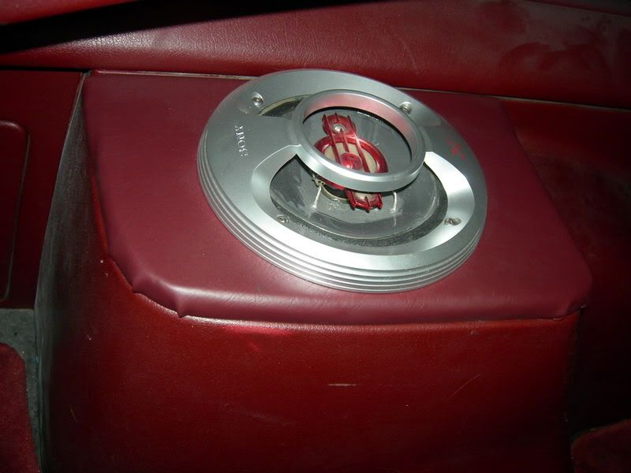
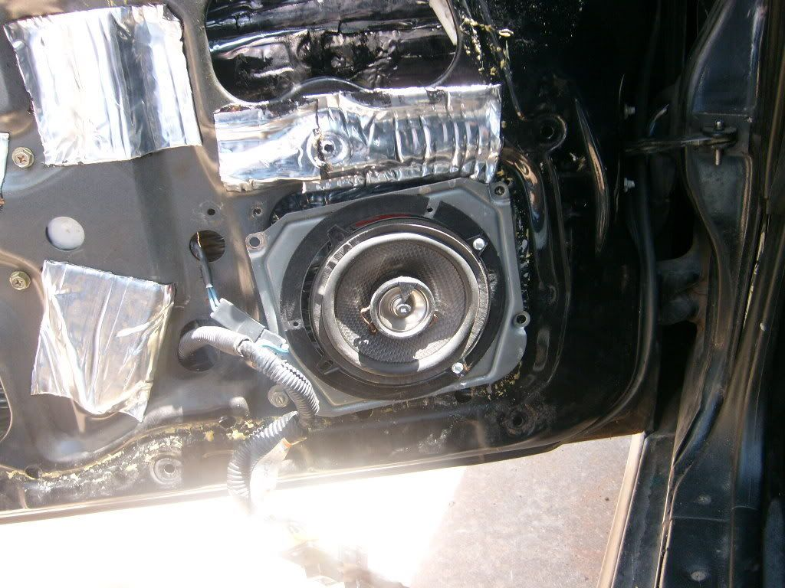
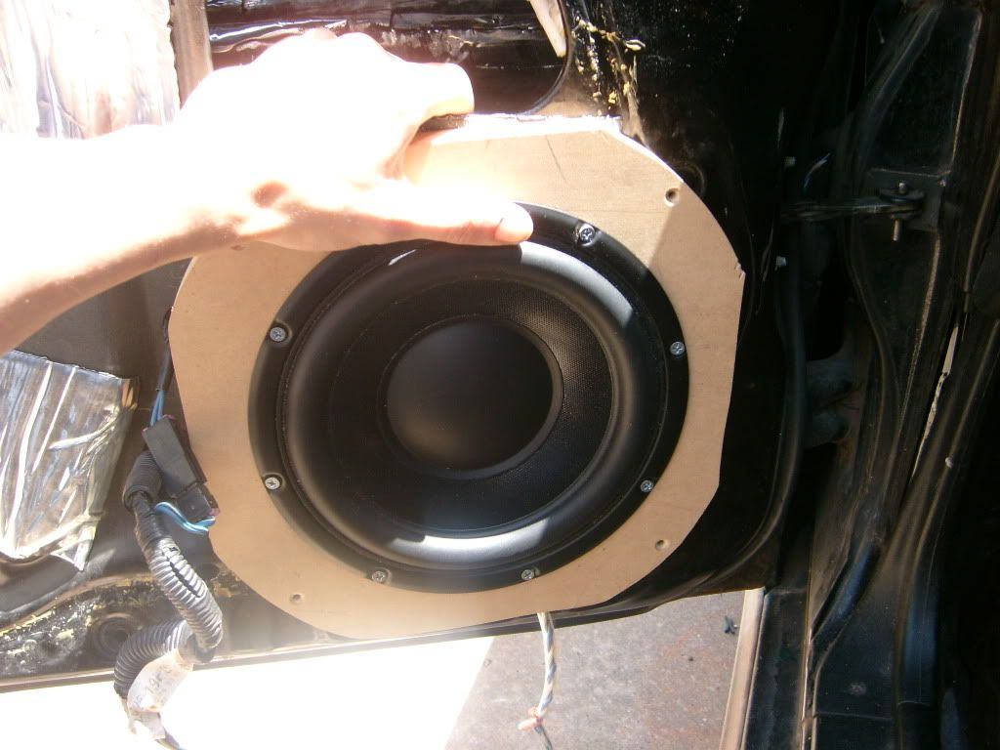

-
What speakers / speaker sizes have you guys found fit in the back slots?
I just purchased some 6x9's and they were too deep.Mmm, that feels good, I mean.. tastes good, I mean.. what? -
in the stock spots? 6.5" and only 6.5".- VG30DET (HE341) 86 300ZX - 1982 280ZX Turbo - Headered NA 1986 300ZX 2+2 - 2000 Xterra - -
yah in the stock spots. 6.5 x 6.5? what about the depth though?
and whats some other interesting things people have done for speakers in the back of thier z's ?Mmm, that feels good, I mean.. tastes good, I mean.. what? -
i had some planet audio 6.5in components in my z i had to modify the shit out of the brackets for them to fit. as far as depth goes the speakers i had were pretty deep and they fit in the front just fine. once i modded the bracket the rears fit with plenty of room underneath them. i been drinking so if this doesn't make sense then im more drunk then i thought. -
i took out the 6.5 speakers in the back on my z. put in two 6x9 speaker boxes with some reallly nice quality speakers and used the stock size up front. sounds great IMO -
I took out the metal peices and put wood covered with vinyl there for my speakers…

should work for 6x9 speakers too.. involves taking out the rear plastics tho
1985 GLL 300ZX Turbo -
My 6.5inch Hypnotic speakers don't fit in the rear. " I spend another hour trying to rip the bolt out of the subframe, pausing every five minutes to scream and contemplate how I get myself into these situations. Two cars over, a guy urinates. I watch the steam waft off of the fresh puddle in the gravel. It merges with the blowing snow and is cut by the aerodynamic wedge of a nearby Fiero. Beautiful. Another pry and the carrier finally falls to earth. I walk out of there $80 lighter, which makes me more mad." - Brian Kolar
" I spend another hour trying to rip the bolt out of the subframe, pausing every five minutes to scream and contemplate how I get myself into these situations. Two cars over, a guy urinates. I watch the steam waft off of the fresh puddle in the gravel. It merges with the blowing snow and is cut by the aerodynamic wedge of a nearby Fiero. Beautiful. Another pry and the carrier finally falls to earth. I walk out of there $80 lighter, which makes me more mad." - Brian Kolar -
is the magnet on them too deep?
that's the problem i had :/Mmm, that feels good, I mean.. tastes good, I mean.. what? -
Hahaha you guys have it easy. I'm not so lucky.
Poopy JBL GTO components that came with the car (they were installed exactly like you see here, I did not touch them before removal)
EDIT: Looking back at the pictures I took when I got the door panel off, the metal baffle was indeed screwed into the door. There was a dime holding the speaker in too

New 8" midbass.....

It's a little big for the hole. Oh well, not the first time I've heard that, I'll make it fit.'87T -
Thats what she said.Nismofreak wrote: I'll make it fit.
Yeah the little arms that reach down to the magnet stop it from sitting flush, and then screwing in. So I think I'm going to cut the opening bigger, and drill new holes!" I spend another hour trying to rip the bolt out of the subframe, pausing every five minutes to scream and contemplate how I get myself into these situations. Two cars over, a guy urinates. I watch the steam waft off of the fresh puddle in the gravel. It merges with the blowing snow and is cut by the aerodynamic wedge of a nearby Fiero. Beautiful. Another pry and the carrier finally falls to earth. I walk out of there $80 lighter, which makes me more mad." - Brian Kolar -
How about you simply make a spacer?'87T -
If you put a spacer for the rear speakers, then would you have a problem fitting the original speaker cover back on.
On yours Nismofreak, that wood block looks like a 3/8 or 1/2. Is the door cover going over that or will you have a cut out within the door panel and cover the block with colored vinyl and speaker grill?
-
wow, definatly not a very thourough speaker job lol. (the guy who did that before you)
but I like the midbass.Mmm, that feels good, I mean.. tastes good, I mean.. what? -
How deep are your 8ââ¬Â midbass?
I have a couple of 6 1/2" midbassââ¬â¢s that I want to use in my doors (when the time comes) but am unsure of the depth available.
What is the max speaker depth for the doors (allowing the windows to work)?
I have not pulled my door panels as of yet and am just curious..
Nismofreak wrote: Hahaha you guys have it easy. I'm not so lucky.
Poopy JBL GTO components that came with the car (they were installed exactly like you see here, I did not touch them before removal)
EDIT: Looking back at the pictures I took when I got the door panel off, the metal baffle was indeed screwed into the door. There was a dime holding the speaker in too
New 8" midbass.....
It's a little big for the hole. Oh well, not the first time I've heard that, I'll make it fit.Kevin
---------------------------------------
1986 NA 5sp - Bone stock, but in good shape -
Why in the hell would you want 6x9's anyways, they dont reprodeuce any quality worth a shit…
buy 2 way 6.5's or if you acctualy want it to sound good by component speakers.. 6.5inch midrange and a tweeter.. I forget the exact model but audiobahn has an older series that when my friend bought them were the best on the market you can get a set for about 100 bucks right now, and seriously he still wins SQL comps with them, his system is ridiculous.1989 300ZX 2+2 N/A GLL
Auto to Manual Swap
NA2T Complete

Copyright © 2006–. All rights reserved. Privacy Policy